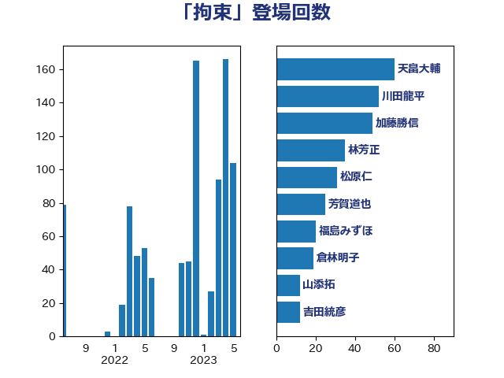

単語「拘束」

| 天畠大輔 | れいわ新選組 | 60 回 |
| 川田龍平 | 立憲民主党 | 52 回 |
| 加藤勝信 | 自由民主党 | 49 回 |
| 林芳正 | 自由民主党 | 35 回 |
| 松原仁 | 立憲民主党 | 31 回 |
| 芳賀道也 | 国民民主党 | 25 回 |
| 福島みずほ | 社会民主党 | 20 回 |
| 倉林明子 | 日本共産党 | 19 回 |
| 山添拓 | 日本共産党 | 12 回 |
| 吉田統彦 | 立憲民主党 | 12 回 |
| 山田勝彦 | 立憲民主党 | 11 回 |
| 和田政宗 | 自由民主党 | 10 回 |
| 米山隆一 | 立憲民主党 | 8 回 |
| 福山哲郎 | 立憲民主党 | 7 回 |
| 山本剛正 | 日本維新の会 | 7 回 |
| 舟山康江 | 国民民主党 | 6 回 |
| 打越さく良 | 立憲民主党 | 6 回 |
| 山下芳生 | 日本共産党 | 6 回 |
| 大島敦 | 立憲民主党 | 6 回 |
| 城内実 | 自由民主党 | 6 回 |
| 吉良よし子 | 日本共産党 | 6 回 |
| 古川禎久 | 自由民主党 | 6 回 |
| 高橋千鶴子 | 日本共産党 | 5 回 |
| 鈴木義弘 | 国民民主党 | 5 回 |
| 渡辺周 | 立憲民主党 | 5 回 |
| 森屋隆 | 立憲民主党 | 5 回 |
| 掘井健智 | 日本維新の会 | 5 回 |
| 岸田文雄 | 自由民主党 | 5 回 |
| 宮本徹 | 日本共産党 | 5 回 |
| 和田有一朗 | 日本維新の会 | 5 回 |
| 齋藤健 | 自由民主党 | 4 回 |
| 高良鉄美 | 無所属 | 4 回 |
| 馬淵澄夫 | 立憲民主党 | 4 回 |
| 阿部弘樹 | 日本維新の会 | 4 回 |
| 鈴木宗男 | 日本維新の会 | 4 回 |
| 石川大我 | 立憲民主党 | 4 回 |
| 日下正喜 | 公明党 | 4 回 |
| 音喜多駿 | 日本維新の会 | 3 回 |
| 青山大人 | 立憲民主党 | 3 回 |
| 長浜博行 | 無所属 | 3 回 |
| 金子道仁 | 日本維新の会 | 3 回 |
| 窪田哲也 | 公明党 | 3 回 |
| 石田昌宏 | 自由民主党 | 3 回 |
| 石川昭政 | 自由民主党 | 3 回 |
| 田村憲久 | 自由民主党 | 3 回 |
| 牧山ひろえ | 立憲民主党 | 3 回 |
| 沢田良 | 日本維新の会 | 3 回 |
| 松川るい | 自由民主党 | 3 回 |
| 杉本和巳 | 日本維新の会 | 3 回 |
| 早稲田ゆき | 立憲民主党 | 3 回 |
| 徳永久志 | 立憲民主党 | 3 回 |
| 川合孝典 | 国民民主党 | 3 回 |
| 山下貴司 | 自由民主党 | 3 回 |
| 塩川鉄也 | 日本共産党 | 3 回 |
| 佐藤正久 | 自由民主党 | 3 回 |
| 仁比聡平 | 日本共産党 | 3 回 |
| 高木真理 | 立憲民主党 | 2 回 |
| 須藤元気 | 無所属 | 2 回 |
| 青山繁晴 | 自由民主党 | 2 回 |
| 輿水恵一 | 公明党 | 2 回 |
| 茂木敏充 | 自由民主党 | 2 回 |
| 船田元 | 自由民主党 | 2 回 |
| 羽田次郎 | 立憲民主党 | 2 回 |
| 紙智子 | 日本共産党 | 2 回 |
| 石橋通宏 | 立憲民主党 | 2 回 |
| 玉木雄一郎 | 国民民主党 | 2 回 |
| 源馬謙太郎 | 立憲民主党 | 2 回 |
| 浜田聡 | NHK党 | 2 回 |
| 東徹 | 日本維新の会 | 2 回 |
| 東国幹 | 自由民主党 | 2 回 |
| 本村伸子 | 日本共産党 | 2 回 |
| 木村次郎 | 自由民主党 | 2 回 |
| 新藤義孝 | 自由民主党 | 2 回 |
| 小川淳也 | 立憲民主党 | 2 回 |
| 安江伸夫 | 公明党 | 2 回 |
| 太栄志 | 立憲民主党 | 2 回 |
| 大西健介 | 立憲民主党 | 2 回 |
| 塩村あやか | 立憲民主党 | 2 回 |
| 吉田はるみ | 立憲民主党 | 2 回 |
| 佐々木さやか | 公明党 | 2 回 |
| 伊藤渉 | 公明党 | 2 回 |
| 井坂信彦 | 立憲民主党 | 2 回 |
| 井上哲士 | 日本共産党 | 2 回 |
| 鬼木誠 | 立憲民主党 | 1 回 |
| 階猛 | 立憲民主党 | 1 回 |
| 長妻昭 | 立憲民主党 | 1 回 |
| 鈴木馨祐 | 自由民主党 | 1 回 |
| 鈴木庸介 | 立憲民主党 | 1 回 |
| 鈴木俊一 | 自由民主党 | 1 回 |
| 重徳和彦 | 立憲民主党 | 1 回 |
| 逢沢一郎 | 自由民主党 | 1 回 |
| 辻元清美 | 立憲民主党 | 1 回 |
| 赤羽一嘉 | 公明党 | 1 回 |
| 赤嶺政賢 | 日本共産党 | 1 回 |
| 西村明宏 | 自由民主党 | 1 回 |
| 西村康稔 | 自由民主党 | 1 回 |
| 若松謙維 | 公明党 | 1 回 |
| 竹内真二 | 公明党 | 1 回 |
| 田村智子 | 日本共産党 | 1 回 |
| 田村まみ | 国民民主党 | 1 回 |
| 田名部匡代 | 立憲民主党 | 1 回 |
| 田中健 | 国民民主党 | 1 回 |
| 清水貴之 | 日本維新の会 | 1 回 |
| 深澤陽一 | 自由民主党 | 1 回 |
| 梅谷守 | 立憲民主党 | 1 回 |
| 枝野幸男 | 立憲民主党 | 1 回 |
| 松野明美 | 日本維新の会 | 1 回 |
| 松野博一 | 自由民主党 | 1 回 |
| 松本剛明 | 自由民主党 | 1 回 |
| 本庄知史 | 立憲民主党 | 1 回 |
| 新垣邦男 | 立憲民主党 | 1 回 |
| 斎藤アレックス | 国民民主党 | 1 回 |
| 斉藤鉄夫 | 公明党 | 1 回 |
| 志位和夫 | 日本共産党 | 1 回 |
| 広瀬めぐみ | 自由民主党 | 1 回 |
| 平沼正二郎 | 自由民主党 | 1 回 |
| 平林晃 | 公明党 | 1 回 |
| 平木大作 | 公明党 | 1 回 |
| 市村浩一郎 | 日本維新の会 | 1 回 |
| 小野泰輔 | 日本維新の会 | 1 回 |
| 小田原潔 | 自由民主党 | 1 回 |
| 小池晃 | 日本共産党 | 1 回 |
| 宮本岳志 | 日本共産党 | 1 回 |
| 宮口治子 | 立憲民主党 | 1 回 |
| 吉田宣弘 | 公明党 | 1 回 |
| 吉川赳 | 無所属 | 1 回 |
| 吉川元 | 立憲民主党 | 1 回 |
| 古賀之士 | 立憲民主党 | 1 回 |
| 古屋範子 | 公明党 | 1 回 |
| 友納理緒 | 自由民主党 | 1 回 |
| 務台俊介 | 自由民主党 | 1 回 |
| 伊藤孝恵 | 国民民主党 | 1 回 |
| 伊藤俊輔 | 立憲民主党 | 1 回 |
| 仁木博文 | 無所属 | 1 回 |
| 串田誠一 | 日本維新の会 | 1 回 |
| 中川郁子 | 自由民主党 | 1 回 |
| 中島克仁 | 立憲民主党 | 1 回 |
| 上田清司 | 国民民主党 | 1 回 |
| 三木圭恵 | 日本維新の会 | 1 回 |